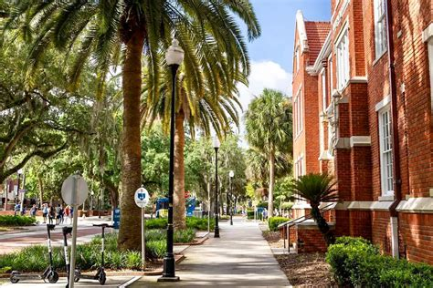
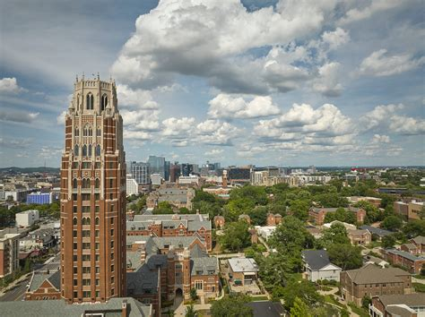
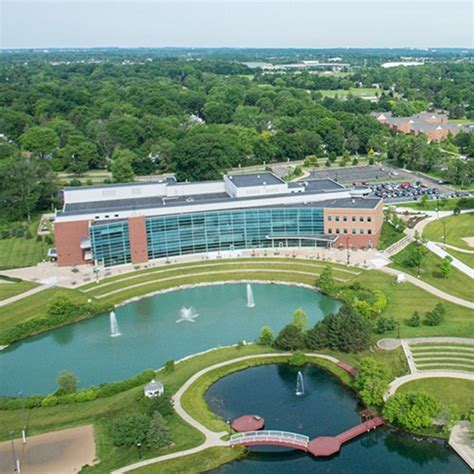
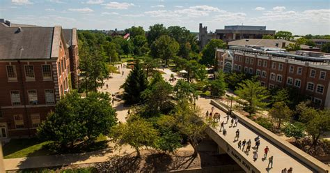
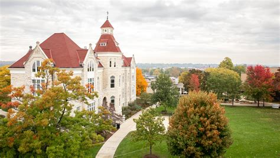

Top 10
University of Wisconsin - Madison
#1 in the U.S. for Education.
UW-Madison is part of the big 10 schools in America, and it offers a fun and enriching experience!

“University of Wisconsin–Madison Named an Innovation and Economic Prosperity University.” News, 15 Oct. 2025, news.wisc.edu/ university-of-wisconsin-madison-named-an-innovation-and-economic-prosperity-university/.
UW-Madison Graduate AdmissionsNorthwestern University
#2 in the U.S. for Education.
Located in Chicago, Illinois, Northwestern offers an urban, thrilling, and social graduate experience!

University Reviews Policies after Off-Campus Shooting - Northwestern Now, news.northwestern.edu/stories/2023/ 04/university-reviews-policies-after-off-campus-shooting.
Northwestern Graduate AdmissionsUniversity of Florida - Gainesville
#2 in the U.S. for Education.
Located in Gainesville, Florida, UF-Gainesville is a tropical and entertaining experience for a graduate school!

Costeines, Michael. “University of Florida Receives 5-Star Grade as One of America’s Best Colleges.” Florida’s Voice, 17 June 2024, flvoicenews.com/university-of-florida-receives-5-star-grade-as-one-of-americas-best-colleges/.
UF-Gainesville Graduate AdmissionsUniversity of Michigan - Ann Arbor
#2 in the U.S. for Education.
UM-Ann Arbor is a beautiful and historic college filled with bright and inquisitive students!

www.collegetuitioncompare.com/edu/ 170976/university-of-michigan-ann-arbor/.
UM-Ann Arbor Graduate AdmissionsVanderbilt University
#5 in the U.S. for Education.
Vanderbilt is located in Nashville, Tennessee, so there will be plenty of musical fun mixed with education!

Villet, Reagan. “Graduate Student Council Announces 2025 Anchor Award Winners.” Vanderbilt University, Vanderbilt University, 4 Dec. 1970, news.vanderbilt.edu/2025/12/04/ graduate-student-council-announces-2025-anchor-award-winners/.
Vanderbilt Graduate AdmissionsHarvard University
#6 in the U.S. for Education.
Located in Cambridge, Massachusetts, Harvard is one of the most notable schools in the United States!

“Harvard University Wallpapers (20 Images).” WallpaperCat, wallpapercat.com/harvard-university-wallpapers.
Harvard Graduate AdmissionsNew York University
#6 in the U.S. for Education.
Located in New York City, NYU has a multitude of opportunities and programs to explore!

SchoolScoops. “NYU Tours: Private Campus Tours with NYU Students.” SchoolScoops, www.schoolscoops.com/p/new-york-university.
NYU Graduate AdmissionsColumbia University
#6 in the U.S. for Education.
Located in New York City, Columbia offers fresh, educational, and inspiring programs and organizations!

“Columbia University Wallpapers.” Wallpapers.Com, wallpapers.com/columbia-university.
Columbia Graduate AdmissionsUniversity of California - Berkeley
#6 in the U.S. for Education.
UC Berkeley is known for its beautiful location in Berkeley, California, and it is also known for its high graduate success rate!

Kelly, John. “John Kelly, Attorney.” 2022, 1 Jan. 1970, blog.law-kelly.com/2022/.
UC Berkeley Graduate AdmissionsUniversity of California - Los Angeles
#6 in the U.S. for Education.
Located in Los Angeles, California, UCLA is an artsy but intellectual school!

Best Colleges for Psychology Majors, www.thoughtco.com/best-colleges-for-psychology-majors-4843830.
UCLA Graduate AdmissionsLocal 10
University of Wisconsin - Madison
#1 in the U.S. for Education.
UW-Madison is part of the big 10 schools in America, and it offers a fun and enriching experience!
“University of Wisconsin–Madison Named an Innovation and Economic Prosperity University.” News, 15 Oct. 2025, news.wisc.edu/ university-of-wisconsin-madison-named-an-innovation-and-economic-prosperity-university/.
UW-Madison Graduate AdmissionsNorthwestern University
#2 in the U.S. for Education.
Located in Chicago, Illinois, Northwestern offers an urban, thrilling, and social graduate experience!
University Reviews Policies after Off-Campus Shooting - Northwestern Now, news.northwestern.edu/stories/2023/ 04/university-reviews-policies-after-off-campus-shooting.
Northwestern Graduate AdmissionsUniversity of Michigan - Ann Arbor
#2 in the U.S. for Education.
UM-Ann Arbor is a beautiful and historic college filled with bright and inquisitive students!
www.collegetuitioncompare.com/edu/ 170976/university-of-michigan-ann-arbor/.
UM-Ann Arbor Graduate AdmissionsMichigan State University
#19 in the U.S. for Education.
Michigan State is located in East Lansing, Michigan, and it offers a spirited and academic-centered lifestyle!

“Michigan State University: Lansing, MI.” Choose Lansing, www.lansing.org/michigan-state-university/.
Michigan State Graduate AdmissionsUniversity of Minnesota - Twin Cities
#26 in the U.S. for Education.
UM-Twin Cities is a local, educational, and uplifting college located in Twin Cities, Minnesota.

“Visit the University of Minnesota Twin Cities.” Visit Us | University of Minnesota Twin Cities, admissions.tc.umn.edu/visit/visit-university-minnesota-twin-cities.
UM-Twin Cities Graduate AdmissionsUniversity of Illinois - Urbana Champaign
#32 in the U.S. for Education.
University of Illinois - Urbana Champaign is a top ranking school local to the midwest!

Castillo, Juan José Mendoza. “History of Programs at University of Illinois - Urbana Champaign.” Blog, 28 Mar. 2025, sabordavida.pt/ qual-e-a-historia-e-os-principais-programas-da-u-of-illinois-at-urbana-champaign/.
University of Illinois - Urbana Champaign Graduate AdmissionsUniversity of Illinois - Chicago
#64 in the U.S. for Education.
Located in the heart of Chicago, Illinois, UIC combines city living with college life!

“University of Illinois at Chicago (UIC) Department of Communication.” Communication Studies, 12 Sept. 2012, www.communicationstudies.com/ communication-colleges/ university-of-illinois-at-chicago-uic-department-of-communication.
UIC Graduate AdmissionsEastern Michigan University
#84 in the U.S. for Education.
Located in Ypsilanti, Michigan, Eastern Michigan University is a unique choice for an incredible school!

Campus Directory & Contact Info | Eastern Michigan University, www.emich.edu/directory/index.php.
Eastern Michigan University Graduate AdmissionsIllinois State University
#95 in the U.S. for Education.
Illinois State is located in Normal, Illinois, and it offers a beyond normal education!

“Illinois State University.” Illinois’ First Public University, 15 Oct. 2026, illinoisstate.edu/?preview=true&site_id=837.
Illinois State Graduate AdmissionsCarroll University
Unranked in the U.S. for Education.
Carroll University is located in Waukesha, Wisconsin, and it offers a challenging but rewarding education!

Facebook, www.facebook.com/carroll.university/.
Carroll University Graduate Admissions